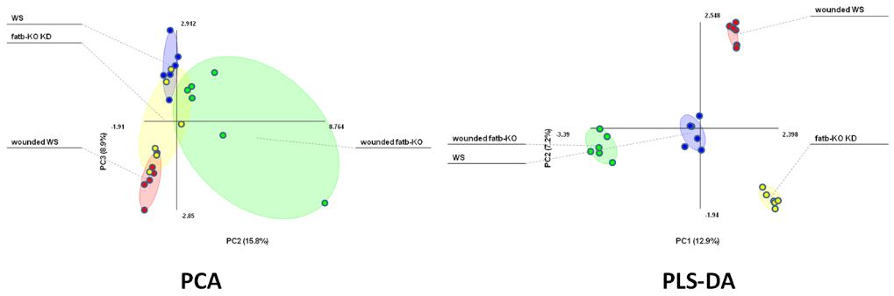

Least Squares ( ≒Supervised method, linear regression in Machine learning)
Partial
While the unsupervised nature of the PCA algorithm provides a means to achieve unbiased dimensionality reduction, its application only reveals group structure when within-group variation is sufficiently less than between-group variation. Therefore, supervised forms of discriminant analysis such as Partial Least Squares (PLS-DA; alternatively Partial Least Squares Projections to Latent Structures [35]) that rely on the class membership of each observation are also commonly applied in metabolic fingerprinting experiments [35, 47]. When class memberships are coded in matrix form into Y [47] and the PLS components are constrained to be orthogonal, the dimensionality-reducing transformation A is a matrix whose columns are the first P eigenvectors of a matrix formed by the covariances between X and Y: